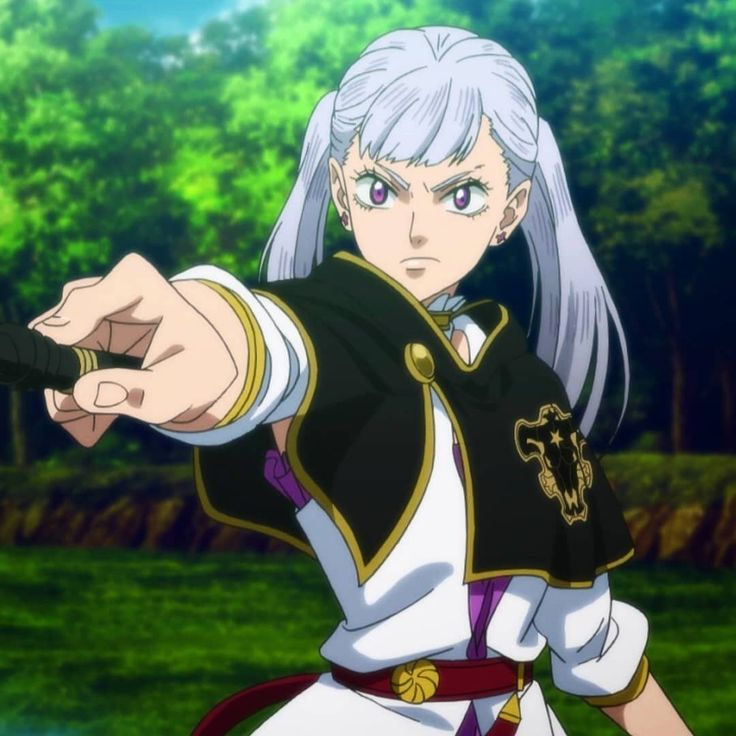

Basic Information
- Name: Noelle Silva
- Age: 15
- Magic Type: Water Magic
- Affiliation: Black Bulls
About Noelle
Noelle is a member of the Black Bulls and a noble from the Silva family. She is known for her strong-willed personality, determination, and her desire to prove herself as a powerful magic knight despite her family's expectations.
Noelle's Magic
Noelle wields Water Magic, which allows her to manipulate water in various forms. She can create powerful water-based attacks and defenses.
Noelle's Relationships
- Asta - Teammate and love interest
- Mimosa Vermillion - Rival and childhood friend
- Yami Sukehiro - Captain of the Black Bulls
- Luck Voltia - Teammate and friend
- Finral Roulacase - Teammate and friend
- Vanessa Enoteca - Teammate and friend
- Charmy Pappitson - Teammate and friend
- Gauche Adlai - Teammate and friend
- Grey - Teammate and friend
- Henry Legolant - Teammate and friend
- Magna Swing - Teammate and friend
- Zora Ideale - Teammate and friend
- Nacht Faust - Teammate and friend